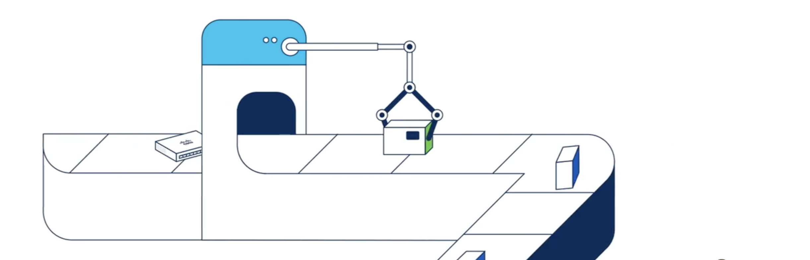
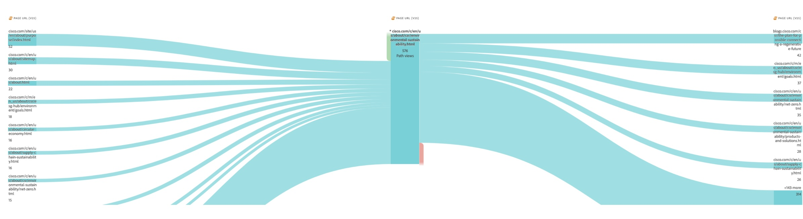
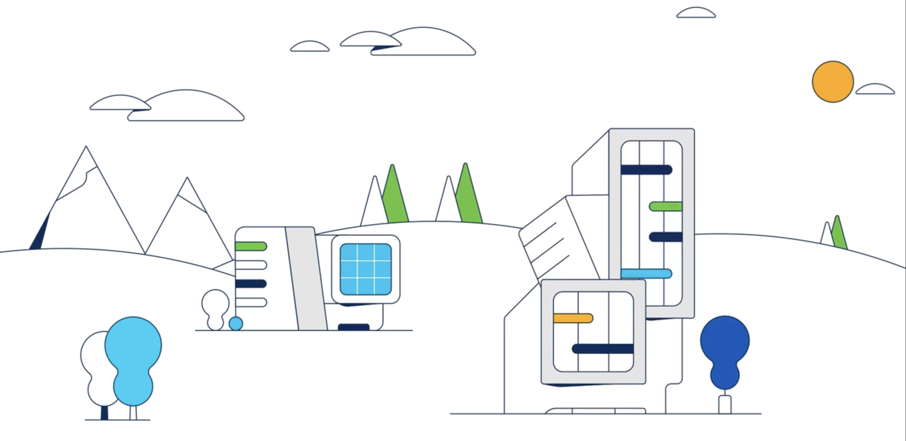
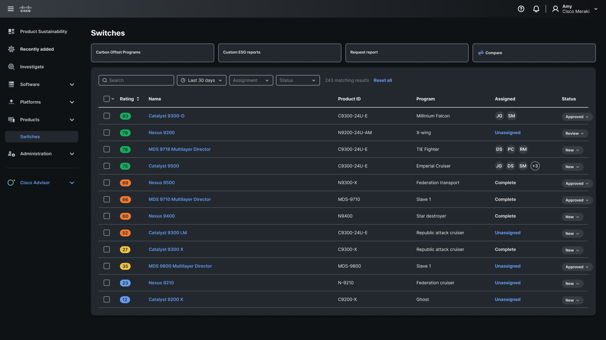
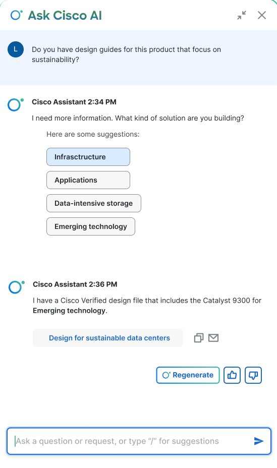
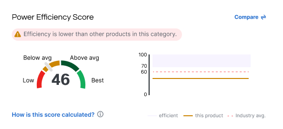
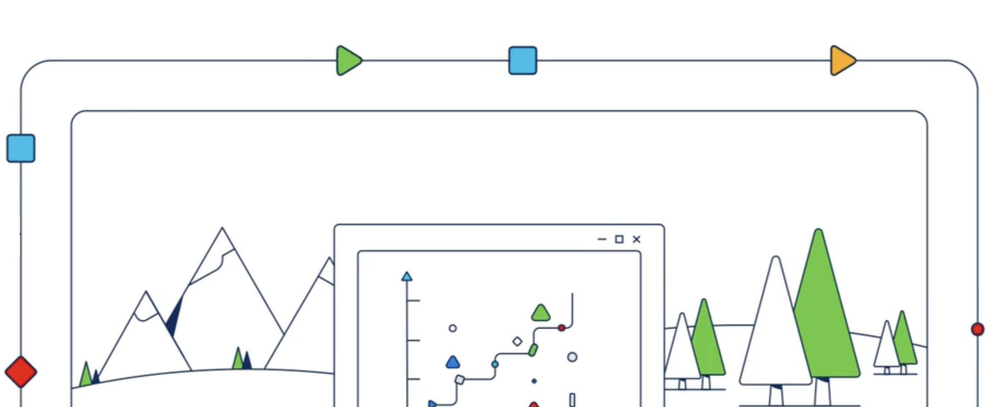

I led design strategy to unlock Cisco's sustainability capabilities as revenue driver. Through behavioral analysis and cross-functional research, I uncovered critical insight: customers actively seeking sustainability information were unable to discover relevant products. This showed a broken information architecture.
I designed an integrated content experience, AI-powered dashboard, and self-service discovery tools across 6 departments. I created scalable design components enabling sustainability integration into 200+ product pages.
Revenue Acceleration
RFP Response: Weeks → Days
AI-powered dashboard eliminated manual data extraction bottleneck
Customer Engagement
200% Content Usage Increase
Redesigned IA connected purpose content to product discovery
Activation Optimization
20% → 55% Program Awareness
Self-service discovery tools surfaced hidden lifecycle programs
Market Position
Industry Leadership
Positioned Cisco as leader in sustainable networking solutions

It started with the introduction of several new
Digging into user research revealed a troubling gap:
only 20% of customers and internal teams knew where to find
sustainability data or were aware of Cisco's circular economy
programs.
For a company committed to environmental responsibility, this
wasn't just an information
Users & Stakeholders
6 teams
Cross-functional alignment between engineering, sustainability, product marketing, product, UXR, and sales on the value and positioning of sustainability.
Timeframe: 10 months
I began the design process with research and data analysis. Working with UXR, I analyzed previous user interviews and determined subjects for research at upcoming Cisco Live events. Our team interviewed stakeholders in 6 departments to gain deep insights into nternal workflows, customer needs, and data silos.
During stakeholder interviews, a product engineering sustainability manager shared a story that crystallized our challenge:
Conducted cross-functional stakeholder interviews across 6 departments to understand internal workflows, customer needs, and data silos. Combining qualitative insights with behavioral analytics, I was able to validate my hypotheses.

Segmentation analysis revealed 73% of sustainability-interested visitors engaged with thought leadership content (purpose pages) but only 3-4% progressed to product/solution pages—identifying a critical conversion gap in the customer journey.

Problem: Sustainability data was siloed in engineering dashboards, inaccessible to sales, marketing, and customers, costing deals.
Design Decision: Use AI to extract the data from the system.
What I Built: Conversational AI prototype querying complex product database, reducing data retrieval from weeks to hours.
Impact: RFP response time: 3 weeks → hours
Problem: High-intent visitors engaging with thought leadership (TOFU) had no pathway to products or solutions (BOFU).
Design Decision: Integrate sustainability data into product pages and data sheets (contextual) instead of just on purpose pages.
What I Built: Modular sustainability components (certifications, interactive IoT design, power visualizations, product comparison visualizations and lifecycle info) integrating into 200+ product pages, datasheets, and AI tool with comparisons.
Impact: 200% increase in sustainability content engagement
Problem: Only 20% awareness of circular economy programs—existing capability, hidden from customers
Design Decision: Surface lifecycle programs at point of need (product research, upgrade flows), not in separate portals and pages.
What I Built: Visual end-of-life program indicators embedded in product discovery
Impact: Program awareness: 20% → 55%
Sustainability data existed in complex product database but required manual extraction, multiple legal approvals, and 2-3 weeks to compile for customer-facing use.
Strategic Decision: Rather than redesigning entire dashboard (expensive, long timeline), I prototyped a conversational AI solution to validate technical feasibility before requesting engineering investment.
Design Artifacts Created:


As one product manager noted:
Being able to compare products was a key need for sales, customers, and partners. Guiding sales and marketing to promote more efficient products while visualizing areas for innovation for product teams.

Viewing the dashboard as a tool for outside teams, and a single source of truth for sign-offs from legal and brand. I did the content modeling and flow diagram for the conversational AI tool to review with engineering.
Multi-turn Dialog for Disambiguation
Sales query: "Show me power consumption for Catalyst" → System: "Which series? 9200, 9300, 9400?" → Refined response
Embedded Governance Workflow
Legal/brand approval built into flow before external sharing—trust signal showing "verified for customer use"
Graceful Error Handling
When data unavailable: show last known value with timestamp + escalation path to human review
Smart Caching Strategy
Common queries cached for performance, partner-specific data real-time—balancing speed vs. freshness
Created modular sustainability components and interactive elements integrated across:
TOFU (Awareness)
Whitepapers, infographics, thought leadership
MOFU (Consideration)
Design guides, product comparisons, certifications
BOFU (Decision)
Energy specs, TCO calculators, lifecycle programs

3+ weeks → days
RFP Response Time
AI dashboard eliminated manual bottleneck, enabling same-day sustainability RFP responses.
200%
Content Engagement Increase
Redesigned IA connected purpose content to product discovery pathways.
20% → 55%
Program Awareness
Self-service tools surfaced hidden circular economy value.
60%
Team Efficiency Gain
Centralized dashboard for single source of truth, eliminating conflicting data.
Market Position
Positioned Cisco as sustainability thought leader in enterprise networking
Sales Enablement
Sales teams gained confidence discussing sustainability metrics in customer meetings
Customer Satisfaction
Shifted from negative feedback (data inaccessible) to positive (best-in-class transparency)
Scalable Framework
Established reusable patterns adopted across other Cisco product lines
{kind=link}
{kind=link}
{kind=link}
{kind=link}
{kind=link}
{kind=link}
{kind=link}
{kind=link}
{kind=link}
{kind=link}